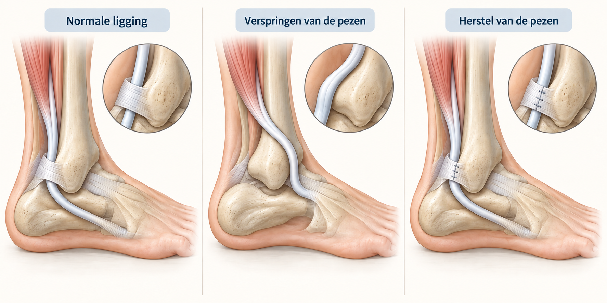
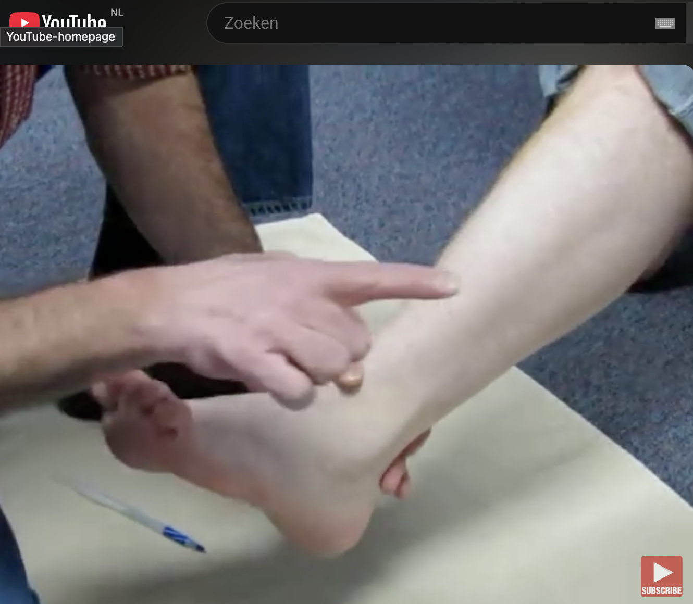
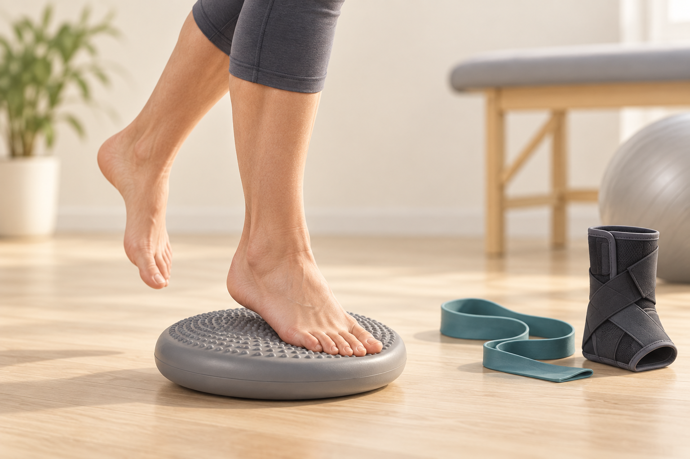

Wat is peroneus saltans?
De peroneuspezen lopen aan de buitenzijde van het onderbeen naar de voet. Achter de buitenenkel liggen vooral de pezen van de peroneus brevis en peroneus longus. Bij peroneus saltans schiet een van deze pezen bij een bepaalde beweging uit de normale loop achter de buitenenkel en weer terug. Dat kan voelbaar of hoorbaar zijn, maar is niet bij iedereen zichtbaar.
De pezen worden daar normaal op hun plaats gehouden door een groeve achter de buitenenkel en het retinaculum: een stevige band van bindweefsel die de pezen tegen het bot houdt. Als die begrenzing na een verzwikking is uitgerekt of beschadigd, kan de pees gemakkelijker verspringen.
Het verschijnsel kan ook samenhangen met de vorm van de groeve, herhaalde sportbelasting, algemene laxiteit of een andere klacht rond de buitenenkel. Een voelbare klik betekent daarom niet automatisch dat precies één oorzaak vaststaat.

Video-uitleg

Hoe kan de pees verspringen?
Bij een acute verzwikking kan het retinaculum aan de buitenzijde van de enkel worden uitgerekt of losscheuren. De pezen kunnen dan bij aanspannen of bij een krachtige beweging naar voren komen. Soms is er daarnaast irritatie van de peesschede of een beschadiging van de pees zelf.
De mate waarin de pees verspringt kan verschillen. Soms gebeurt het alleen bij een specifieke beweging of sportbelasting; soms is er ook in rust of bij gewoon lopen een klik of verplaatsing. Een pees kan daarbij pijnlijk zijn, maar verspringen kan ook vooral een mechanisch gevoel geven.
Het is daarom belangrijk om niet alleen naar een scan te kijken. Het moment waarop het knappen optreedt, de beweging die het uitlokt en wat bij lichamelijk onderzoek te zien of te voelen is, geven samen richting.
Enkelbandletsel, sinus tarsi-klachten, kraakbeenletsel, stressletsel, artrose of voetstand kan hetzelfde gebied pijn laten doen. De Voet- en enkelpijnwijzer kan dit niet onderscheiden.
Welke klachten passen erbij?
Peroneuspeesklachten geven vaak pijn achter de buitenenkel, onder de buitenenkel of langs de buitenzijde van de voet. Er kan zwelling of gevoeligheid langs de pees zitten. Druk achter de buitenenkel, traplopen, wandelen op ongelijke ondergrond, hardlopen, springen, wenden en keren of zijwaarts bewegen kan de klachten uitlokken.
Sommige mensen voelen knappen, schuren of verspringen. Dat kan passen bij peesschede-irritatie, subluxatie of een pees die niet rustig in zijn groeve blijft lopen. Soms is er vooral een gevoel van zwakte of onzekerheid aan de buitenzijde van de enkel, zeker na herhaald verzwikken.
Pijn aan de basis van het vijfde middenvoetsbeentje of meer onder de buitenrand van de voet kan ook een andere oorsprong hebben, zoals botstress, een probleem rond het cuboid of druk door voetstand.
Ontstaan en risicofactoren
Peroneuspeesklachten kunnen geleidelijk ontstaan door overbelasting, sportopbouw, veel lopen op ongelijke ondergrond, herhaalde zijwaartse bewegingen of verandering van schoenen/training. Ze kunnen ook na een enkelverzwikking ontstaan. Bij een inversietrauma kunnen pezen, peesschede en enkelbanden tegelijk geirriteerd of beschadigd raken.
Peroneus saltans wordt soms gemist omdat het beeld lijkt op gewoon enkelbandletsel. Aanhoudende pijn achter de buitenenkel, zwelling langs de pees of knappen na een verzwikking kan reden zijn om verder te kijken dan alleen de banden. Ze kunnen ook samengaan met chronische enkelinstabiliteit.
Een holvoet of cavovarus-stand kan de buitenzijde van de voet en enkel extra belasten. Een naar buiten kantelende hiel of hoge voetboog kan bijdragen aan doorzwikken, laterale druk en overbelasting van de peroneuspezen.
Wat kan het ook zijn?
Sinus tarsi-klachten geven vaker pijn voor of onder de buitenenkel, vooral op ongelijke ondergrond of na eerder verzwikken. Dat kan lijken op peroneus saltans, maar de pijnbron ligt dan meer in de ruimte tussen sprongbeen en hielbeen.
Kraakbeenletsel van de enkel of een corpus liberum kan diepe pijn, zwelling na belasting, haperen of slotklachten geven. Enkelartrose kan stijfheid, startklachten en pijn rond het gewricht geven. Pijn na een eerdere breuk of oud letsel vraagt soms een bredere beoordeling.
Botstress of een stressfractuur, klachten aan de basis van het vijfde middenvoetsbeentje, cuboidklachten, een ganglion, zenuwirritatie of een schoen-/drukprobleem kan eveneens pijn aan de buitenzijde geven. Bij acute botdrukpijn of niet kunnen belasten na letsel is de zorgroute anders dan bij geleidelijke peesoverbelasting.
Overbelasting of peesschede
Pijn en zwelling langs de pees, vaak bij sport, ongelijke ondergrond of zijwaartse belasting.
Scheur of subluxatie
Aanhoudende pijn, krachtverlies of knappen achter de buitenenkel kan reden zijn verder te kijken.
Instabiliteit of cavovarus
Doorzwikken of een hoge voetboog kan de buitenzijde extra belasten en klachten onderhouden.
Onderzoek en beeldvorming
De beoordeling begint met het verhaal: waar zit de pijn precies, was er een verzwikking, is er knappen of verspringen, welke sport of belasting lokt klachten uit, en is er eerder sprake geweest van instabiliteit, voetstandproblemen of een breuk?
Bij lichamelijk onderzoek wordt gekeken naar stand van voet en achtervoet, looppatroon, drukpijn langs de peroneuspezen, zwelling, kracht tegen weerstand, pijn bij het naar buiten bewegen van de voet, enkelstabiliteit, subtalaire regio, de basis van het vijfde middenvoetsbeentje en het cuboid. Als iemand knappen ervaart, kan geprobeerd worden dat veilig te provoceren.
Rontgenfoto's kunnen zinvol zijn bij trauma, botdrukpijn, verdenking op stressletsel, stand, artrose, oude breuk of pijn bij het vijfde middenvoetsbeentje. Echo kan nuttig zijn bij vocht rond de pees, tenosynovitis, dynamische beoordeling en verdenking op subluxatie. MRI kan helpen bij verdenking op peesscheur, peesschede-irritatie, kraakbeenletsel of ander bijkomend letsel.
Echo is onderzoeker-afhankelijk en MRI kan toevalsbevindingen tonen. Beeldvorming moet daarom altijd worden gelezen naast klachten, onderzoek en de vraag die beantwoord moet worden.
Behandeling
De eerste aanpak hangt af van de oorzaak en ernst. Bij forse pijn kan tijdelijk rustiger belasten of beschermen nodig zijn. Bij sportbelasting gaat het vaak om aanpassen van training, ondergrond, schoenen en opbouw. De pees hoeft niet bij iedere klik of verspringing geopereerd te worden.
Verminder tijdelijk bewegingen die pijn, zwelling of knappen rond de buitenenkel uitlokken.
Fysiotherapie kan werken aan peroneuskracht, kuitkracht, balans, proprioceptie en controle.
Ondersteuning kan tijdelijk helpen bij instabiliteit of sportopbouw, maar vervangt geen revalidatie.
Bij cavovarus, hoge voetboog of laterale druk kan schoenadvies of podotherapie relevant zijn.
Soms wordt tijdelijke immobilisatie besproken bij forse pijn of verdenking op ernstiger peesletsel. Een injectie rond de peesschede is geen standaardoplossing en hoort, als het al wordt overwogen, geselecteerd en binnen een behandelrelatie te gebeuren. De afweging hangt af van het weefsel, de klachten en de vraag of de pees daadwerkelijk verspringt.

Wanneer kan beoordeling worden overwogen?
Beoordeling kan worden overwogen bij duidelijk en herhaald verspringen van de pees, aanhoudende pijn ondanks passende eerste aanpak, terugkerende zwelling, sport- of werkbeperking, verdenking op een peesscheur of klachten die niet passen bij een eenvoudig herstelverloop.
Operatieve mogelijkheden hangen af van de bevindingen. Soms gaat het om herstel van het retinaculum, behandeling van een beschadigde pees of het verdiepen van de peesgroeve. Ook de enkelbanden of voetstand kunnen worden meegewogen wanneer die de klachten onderhouden. Een ingreep is niet bedoeld als algemene oplossing voor alle buitenenkelpijn.
Herstel duurt vaak weken tot maanden en revalidatie blijft belangrijk. Mogelijke risico's zijn wondproblemen, infectie, trombose, zenuwirritatie of doof gevoel, stijfheid, restpijn, opnieuw klachten, aanhoudende instabiliteit, beperkingen bij sport en verdere behandeling.
Wat bespreek je tijdens een consult?
Noteer waar de pijn zit: achter de buitenenkel, onder de buitenenkel, langs de buitenzijde van de voet of bij het vijfde middenvoetsbeentje. Beschrijf ook of er knappen, verspringen, zwelling, krachtverlies, doorzwikken of pijn op ongelijke ondergrond is.
Neem eventuele foto's, echo- of MRI-verslagen, rontgenfoto's, fysiotherapieverslagen, brace- of zoolervaringen en sportinformatie mee. Bij terugkerende verzwikkingen of een hoge voetboog is de stand en stabiliteit van de hele voet-enkelketen relevant.
Waar kan je terecht?
Bij nieuwe of acute klachten is de huisarts of huisartsenpost vaak het eerste aanspreekpunt. Bij herstel, kracht, balans, sportopbouw, braceadvies of schoen-/zoolvraag kan fysiotherapie of podotherapie een rol spelen.
Als specialistische beoordeling passend is, kan de verwijzer gericht naar mij verwijzen via de gebruikelijke zorgkanalen. Bij een verwijzing op mijn naam voer ik de beoordeling in principe zelf uit. De wachttijd kan daardoor soms langer zijn. Voor afspraken, planning, uitslagen en praktische ziekenhuisinformatie zijn de officiële ETZ-kanalen leidend.
Is peroneus saltans al elders vastgesteld of beoordeeld en is er behoefte aan een tweede mening, dan kan de verwijzer daarvoor ook gericht naar mij verwijzen. Ik beoordeel de situatie opnieuw; een tweede mening betekent niet automatisch dat de eerdere beoordeling of behandelrichting verandert.
Veelgestelde vragen
Wat is peroneus saltans?
Peroneus saltans betekent dat een peroneuspees bij een beweging uit zijn normale loop achter de buitenenkel komt en weer terugschiet. Dat kan samengaan met irritatie, beschadiging of uitrekking van het weefsel dat de pezen op hun plaats houdt.
Welke klachten passen bij pijn aan de buitenenkel?
Klachten kunnen bestaan uit pijn achter of onder de buitenenkel, zwelling langs de pees, gevoeligheid bij zijwaarts bewegen, pijn bij traplopen, ongelijke ondergrond of sport, en soms knappen of verspringen achter de buitenenkel.
Kan dit ontstaan na een enkelverzwikking?
Ja. Peroneus saltans kan ontstaan na een inversietrauma of enkelverzwikking, naast enkelbandletsel bestaan en samengaan met chronische enkelinstabiliteit.
Wat betekent knappen of verspringen achter de buitenenkel?
Knappen of verspringen kan passen bij subluxatie van een peroneuspees, waarbij de pees niet stabiel achter de buitenenkel blijft lopen. Het kan ook andere oorzaken hebben en vraagt beoordeling in combinatie met onderzoek.
Wanneer is echo of MRI zinvol?
Echo kan nuttig zijn bij peesschedevocht, dynamiek en verdenking op verspringen. MRI kan helpen bij verdenking op peesscheur, peesschede-irritatie, kraakbeenletsel of bijkomend letsel. Beeldvorming bepaalt de diagnose niet los van verhaal en onderzoek.
Wat kan erop lijken?
Sinus tarsi-klachten, chronische enkelinstabiliteit, kraakbeenletsel, corpus liberum, stressfractuur, klachten aan de basis van het vijfde middenvoetsbeentje, cuboidklachten, enkelartrose en pijn na een breuk kunnen op peroneus saltans lijken.
Helpen oefeningen, brace, schoenen of zolen?
Dat kan, afhankelijk van de oorzaak. Belasting aanpassen, fysiotherapie, peroneuskracht, balans, proprioceptie, sportopbouw, schoenadvies, brace of zolen kunnen onderdeel zijn van de eerste aanpak.
Wanneer kan beoordeling of operatie worden overwogen?
Specialistische beoordeling kan relevant zijn bij aanhoudende pijn, verdenking op peesscheur, duidelijke peessubluxatie, blijvende instabiliteit, cavovarus-stand, sportbeperking of onvoldoende herstel ondanks passende eerste aanpak. Operatie is alleen een geselecteerde optie.